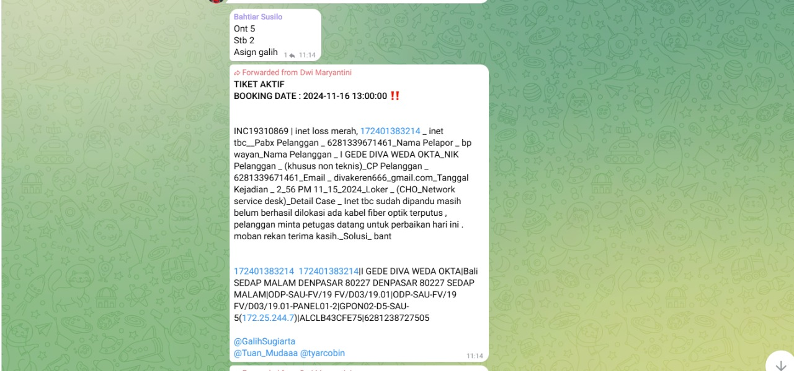

- Pekerjaan yang saya kerjakan di PT Telkom
- Stock Opname(SO)
- Quality Countrol(QC)
- Menyiap kan material dan NTE untuk teknisi menggunakan SCMT
Stock Opname (SO)
Stock opname adalah dapat diartikan sebagai aktivitas menghitung stok barang di gudang sebelum dipasarkan atau dijual. Aktivitas ini harus dilakukan dengan teliti dan juga cermat. Agar tidak terjadi kesalahan pencatatan dan juga penghitungan akibat adanya barang yang terlewat
stock opname di PT Telkom ada 4 yaitu SO CCTV, SO material, SO NTE GUDANG EBIS, dan SO NTE Consumer, setalah melakukan SO selanjutnya melakukan QC 32 Serial Number NTE
cara melakukan Stock Opname (SO)
1. Barcode seluruh NTE yang ada di gudang
2. kemudian kirim ke grup pemeriksaan
3. setelah di periksa dan tidak ada negative, lanjut transaksi dengan teknisi
Quality Cuntrol (QC)
Quality control (QC) adalah proses pengecekan suatu produk yang dilakukan oleh perusahaan untuk memastikan dan menjaga kualitas produknya. Di dalam proses quality control, setiap produk yang tidak sesuai dengan standarnya tidak akan lolos untuk dijual ke pasaran
Cara melakukan Quality Countrol
1. Ambil perangkat NTE sebanyak 32 kotak
2. Keluarkan NTE dari kotak, kemudian foto bagian SN NTE, cek perlengkapan NTE seperti RJ45, patchcord, remote, dan adaptor
3. kemudian masukkan ke GDOG QC,
menyeiap kan material dan NTE menggunakan Suplay Caint Managemnt (SCMT)
ini adalah tugas utama saya di PT Telkom yaitu menyiapkan material atau NTE untuk teknisi yang mereka reques dari telegram, sebelum material atau NTE di ambil teknisi, material dan NTE tersebut harus melewati proses Suplay Caint Menegement (SCMT), setelah melakukan prroses SCMT baru bisa di bawa teknisi
cara menggunakan Suplay Caint Management (SCMT)
1. minta tiket reques NTE dari teknisi
2. masukkan Nama atau NIK teknisi
3. masukkan id tiket INC dan 1724 untuk remerk itu opsional
4. masukkan serial number (SN) NTE

5. submit dan kirim bukti submit ke teknisi